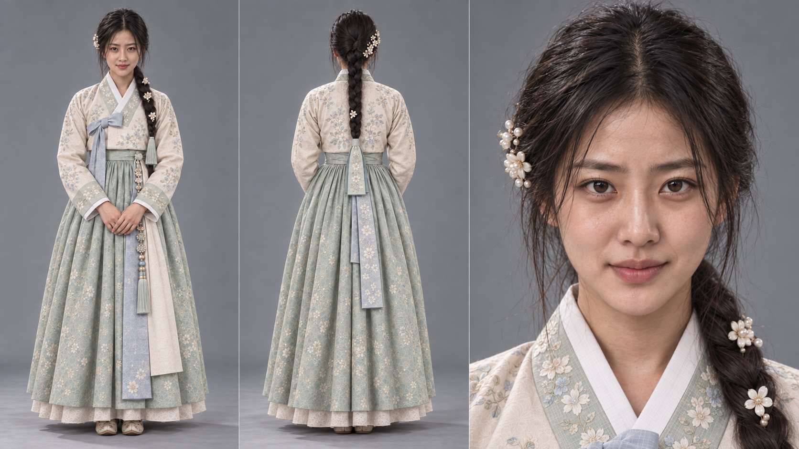
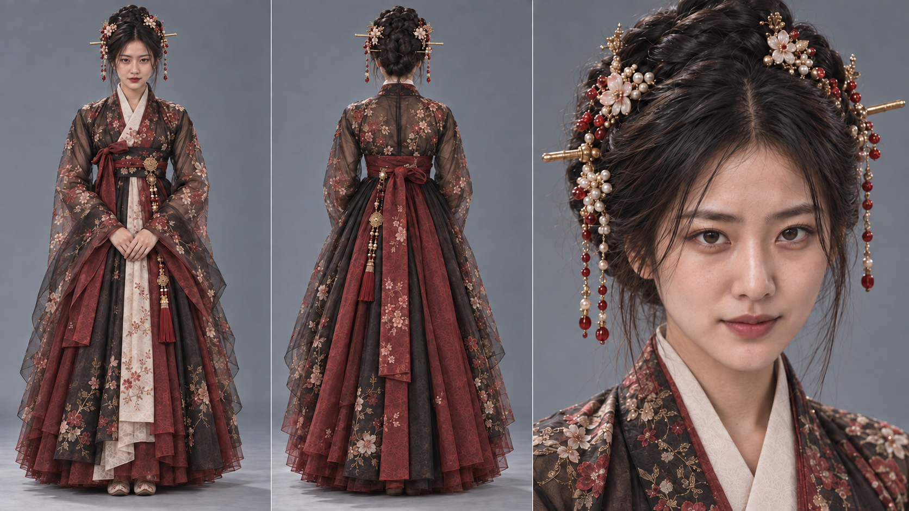
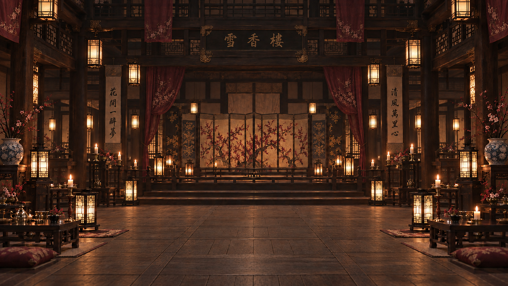
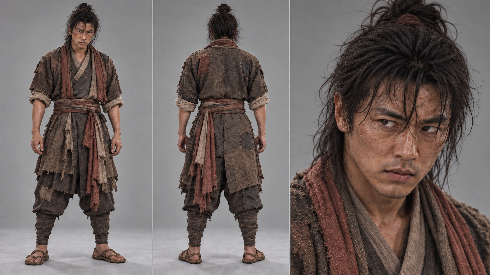

새 얼굴, 같은 세계 — 캐릭터와 장소 조화 테스트
재작업한 주연 캐릭터를 기존 장소 이미지와 영상으로 맞춰보다
2026년 9월 30일따로 만든 캐릭터와 장소가 한 영화처럼 붙는가
#006에서 트레일러에 필요한 장소 이미지를 비트별로 고정했고, #007에서는 필복·여생·이현의 주요 캐릭터 시트를 실제 배우에 가까운 방향으로 다시 만들었다. 이제 확인해야 할 것은 각각 잘 만들어진 두 자산이 같은 화면 안에 들어갔을 때 정말 하나의 영화 세계처럼 붙는가였다.
《갑패》 트레일러는 Seedance 2.5와 MiniMax H3 같은 AI 영상 모델을 활용할 계획이었기 때문에, 캐릭터와 장소가 정지 이미지에서 잘 보이는 것만으로는 부족했다. 인물이 실제로 움직일 때 피부와 의상, 공간의 조명과 색감, 배경의 깊이와 인물의 존재감이 서로 따로 놀지 않는지를 영상으로 확인해야 했다.
그래서 9월 30일에는 서로 성격이 완전히 다른 두 장면을 골라 짧은 영상 테스트를 만들었다. 하나는 화려한 실내에서 여주인공의 움직임을 확인하는 장면, 다른 하나는 야외의 강한 광원 아래 두 인물이 감정적으로 붙는 장면이다.
캐릭터와 장소를 따로 잘 만드는 것보다 중요한 건, 둘을 한 화면에 넣었을 때 같은 영화의 세계처럼 보이느냐였다.
TEST 01 — 여생 × 설향루
테스트 목적: 새 여생 캐릭터 시트의 얼굴 일관성 · 화려한 기녀 의상 · 입체적인 실내 공간 · 춤동작의 안정성
첫 테스트는 양가집 규수에서 도망자가 되고, 다시 기녀 ‘단휘’로 변신하는 여주인공 여생을 선택했다. 여생은 같은 얼굴로 여러 신분을 오가야 하는 인물이기 때문에, 재작업한 캐릭터 시트가 영상에서도 하나의 배우로 유지되는지 확인하기에 가장 적합했다.


장소는 트레일러 첫 비트에 사용하는 설향루 중앙 무대를 그대로 사용했다. 단순한 벽면 배경이 아니라 계단, 무대, 난간, 등롱과 기둥이 여러 깊이로 겹치는 공간이라 인물이 움직일 때 공간감이 쉽게 무너질 수 있는 장소다.

이 장면을 선택한 이유는 분명했다. 화려한 여주인공의 춤동작과 복잡한 설향루 실내가 동시에 등장하기 때문에, 새 캐릭터가 입체적인 공간 안에서 안정적으로 움직이는지를 한 번에 확인할 수 있었다. 얼굴과 의상의 정체성이 흔들리지 않는지, 따뜻한 실내 조명 아래 피부와 옷감이 자연스럽게 섞이는지, 움직임이 배경과 분리되어 떠 보이지 않는지를 중심으로 봤다.
Test 01 · Yeosaeng × Seolhyangru
테스트 결과, 재작업한 여생의 얼굴과 기녀 의상은 설향루의 붉은 천과 목재, 따뜻한 등불빛 안에서도 충분히 한 장면으로 붙었다. 특히 정지 이미지에서 확인하기 어려웠던 인물 움직임과 공간 깊이의 동시 유지를 확인할 수 있었다는 점이 중요했다.
TEST 02 — 필복 × 여생 × 낙화놀이
테스트 목적: 두 주연의 얼굴 일관성 · 서로 다른 신분의 복식 조화 · 강한 광원 아래 피부와 색감 · 로맨스 장면의 영화적 앙상블
두 번째 테스트는 백정인 주인공 필복과 양가집 규수인 여생의 이루어질 수 없는 사랑을 보여주는 장면을 골랐다. 이번에는 한 명의 캐릭터가 공간과 붙는지를 넘어, 서로 다른 질감의 두 인물이 같은 빛과 같은 감정선 안에서 자연스럽게 어울리는지를 확인하는 것이 목표였다.

장소는 비트 12의 낙화놀이가 펼쳐지는 장터 축제 밤이다. 머리 위로 수많은 불꽃이 쏟아지고, 한옥과 젖은 흙길 전체에 주황빛이 반사되는 강한 광원 환경이라 캐릭터와 배경이 따로 놀기 쉬운 장면이다.
이 장면을 선택한 이유도 바로 그 점이었다. 화려한 낙화 불빛이 필복의 거친 피부와 낡은 옷, 여생의 정돈된 얼굴과 한복에 같은 방향의 빛으로 자연스럽게 걸리는지, 그리고 두 사람이 가까이 붙는 로맨스 장면에서도 서로 다른 이미지처럼 분리되지 않는지를 확인했다.
Test 02 · Pilbok × Yeosaeng × Nakhwa
두 번째 테스트에서도 인물과 배경의 색감, 피부와 의상의 광원 반응, 두 주연이 같은 화면 안에서 느껴지는 앙상블을 확인했다. 특히 화려한 불빛이 많은 장면에서도 인물의 얼굴이 무너지거나 배경과 따로 분리되지 않고, 한 편의 사극 영화 안에서 촬영된 장면처럼 묶일 수 있는 가능성을 확인했다.
두 테스트를 통과하고, 다음 단계로
이번 두 영상의 목적은 완성된 트레일러 컷을 만드는 것이 아니었다. #006의 장소 이미지와 #007의 새 캐릭터 시트가 실제 움직이는 화면에서도 함께 사용할 수 있는지를 확인하는 앙상블 테스트였다.
제작 기준에서 두 테스트 모두 통과했다. 캐릭터와 장소를 따로 준비한 방식이 영상으로 합쳐졌을 때도 유효하다는 것을 확인했기 때문에, 이제 다음 문제로 넘어갈 수 있다.
다음 단계는 Blender를 활용한 3D 프리비즈다. 단순히 AI가 만들어주는 카메라 움직임을 받아들이는 것이 아니라, 3D 모델을 이용해 공간 안에서 카메라 위치와 이동 경로, 캐릭터의 동작과 타이밍을 먼저 제어한 뒤 그 설계를 AI 영상으로 넘기는 방식이다.
캐릭터와 장소의 조화가 확인됐다. 이제부터는 ‘잘 만들어지는가’보다 ‘내가 원하는 대로 움직일 수 있는가’를 시험한다.
다음 목표는 최고의 이미지를 만드는 것이 아니라, 최고의 카메라 워킹을 설계하고 통제하는 것이다.